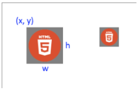
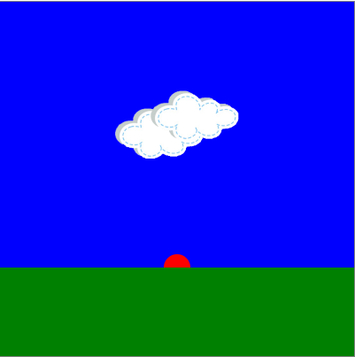

Draw Images
Video LessonLearn how to draw images on an html <canvas>.
ctx.drawImage() | Image Load Time
ctx.drawImage()
ctx.drawImage(imgEl, x, y, [w], [h]);
- imgEl = image element to draw
- (x, y) = top left corner
- w = width (Optional)
- h = height (Optional)
Example
First load the image in index.html and set the display property to none...
<!-- Load Image -->
<img id="html-logo" src="img/html-logo.png" style="display: none;">
... then use JavaScript to get the image element and draw the image to the canvas.
// Draw an image
let htmlLogoEl = document.getElementById("html-logo");
ctx.drawImage(htmlLogoEl, 50, 50); // Draw original image size
ctx.drawImage(htmlLogoEl, 200, 50, 40, 40); // Scale image to 40 x 40

Image Load Time
Sometimes an image will not appear on the canvas because JavaScript tries to draw the image before it has been completely loaded.
To wait for all images to load you can use the window load event.
// HTML Variables
let htmlLogoEl = document.getElementById("html-logo");
// Event Listener - wait for all resources to load
window.addEventListener("load", draw);
function draw() {
ctx.drawImage(htmlLogoEl, 50, 50);
}
Summary
- The
ctx.drawImage()function may be used to draw images on the canvas. - The window load event may be used to make sure that the program waits for all resources to be loaded.
Check Your Understanding
Draw Sunrise
Use basic shapes and images to draw the picture below on an html canvas.
- Canvas size is 400 x 400.
- Download cloud image: cloth-cloud.png
- The red sun is actually a full circle: the grass is covering the bottom half of the sun. (The order in which you draw items controls how the items are layered)
